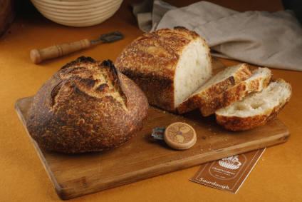

FRESH EVERYDAY
What We Bake
Everything is made in small bathches, using local flour and seasonal ingredients.

Country Sourdough
A 48-hour slow-ferment loaf with a crackly crust and an open, chewy crumb ourflagship bread.
KSH 480

Butter Crossant
72 layers of laminated dough folded by hand ,baked until deeply golden and impossibly flaky
KSH 180

Celebration cakes
custom layer cakes for birthdays and events-vanila beamn dark choclate and seasonal fruit
From KSH 3200

seasonal tarts
A buttery pate sucree shell filled with pastry cream and whatever fruit is at its peak this week
KSH 320

Morning Buns
PIllowy enriched dough rools glazed with orange zest sugar and a pinch of cinamon. Best warm.
KSH 210

Cookie Box
A rotating selection of six-brown butter chocolate chiptahini shortbread and more.
ksh 650